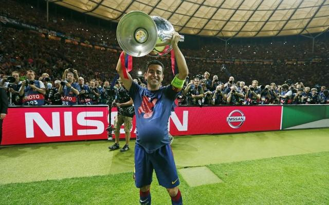

España
España
El Cerebro del Juego

Xavi Hernández es la encarnación del ADN blaugrana. Nacido en Terrassa, llegó a La Masía con 11 años desarrollando una compresión táctica que revolucionó el mediocampo.
Debutó con Van Gaal en 1998, pero fue con Guardiola cuando se convirtió en el mejor centrocampista del mundo. Su asociación con Iniesta y Busquets definió el "tiki-taka" que dominó el fútbol entre 2008-2015.
Con 25 títulos, es el 2° jugador más laureado del Barça. Johan Cruyff dijo: "Xavi ve el fútbol como nadie. Es un director de orquesta con balón". Tras su salida en 2015, regresó como entrenador en 2021 para devolver el ADN cruyffista.
Su legado: 969 pases precisos por cada 90 minutos en su mejor temporada (2010/11), un récord europeo.